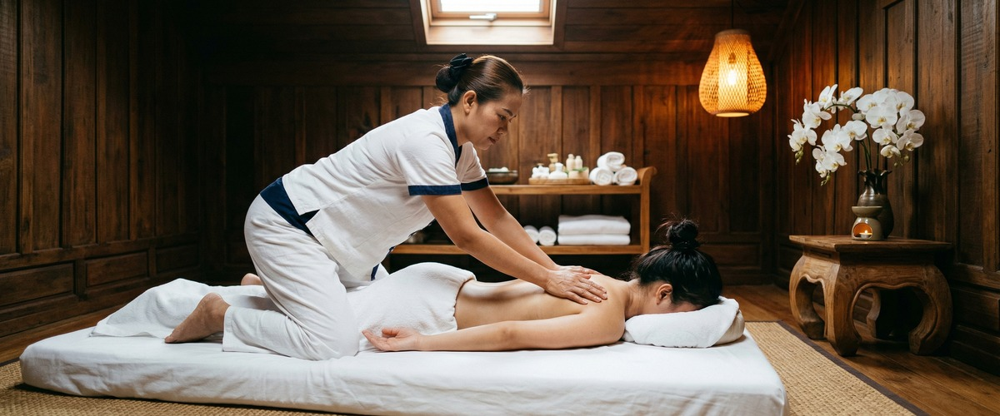
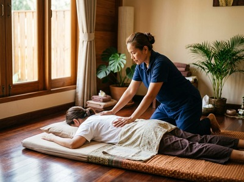

If your shoulders have been creeping up toward your ears all week, your neck is locked tight, and you can't remember the last time you felt properly rested, you're carrying more than a busy schedule.

Stress and physical tension feed each other in a cycle that's hard to break. Thai massage is one of the most effective ways to interrupt that cycle. It addresses both the muscular tightness and the body's stress response at the same time.
Stress is the body's automatic response to pressure or threat. When you experience it, your brain triggers the release of hormones including cortisol and adrenaline, preparing your body for action. NHS Inform explains that under chronic stress, these hormones stay elevated rather than returning to normal, affecting your sleep, mood, digestion, and physical health.

The physical effect most people feel first is muscle tension. The body braces under stress, and that bracing becomes a habit. The trapezius, neck, and upper back are common places where this tension builds.
Over time, that sustained tension leads to headaches, restricted movement, poor sleep, and a general sense of being unable to switch off.
Massage works on stress in two ways: it releases muscle tension directly, and it activates the parasympathetic nervous system. The parasympathetic system is your body's rest-and-digest mode — the opposite of the stress response. Hands-on pressure and rhythmic movement shift the body toward this calmer state, slowing heart rate and easing the physical alertness that chronic stress keeps switched on.
A widely cited review on PubMed examining massage therapy's effect on stress biochemistry found average cortisol reductions of around 31%. It also found increases in serotonin and dopamine across studies that measured these markers. Swedish massage, with its long, flowing strokes and rhythmic pressure, is particularly good at promoting this calming response. Aromatherapy massage builds on this by pairing essential oils with massage technique. Oils such as lavender and bergamot have been shown to support nervous system calming.
Sports massage targets the areas where physical tension has built up most. At Serendipity, the best approach for stress and tension usually draws from across our treatment range. A Thai oil massage addresses deep muscle holding with targeted pressure. Thai aromatherapy massage adds the benefit of essential oil blends. For clients whose tension sits mainly in the upper back, neck, and shoulders, a Thai head massage focuses precisely on those areas. You can book your session online and let us know what you're dealing with so we can match you to the right treatment.
Your session begins with a short consultation. We want to know where you're holding tension, what your week has looked like, and what you need from the time on the table. This isn't a formality. It shapes how your therapist works.
Our therapists at Central Chambers on Hope Street, Glasgow are trained to read the body rather than follow a script. If your upper back is locked and your neck barely turns, that will be addressed directly. If the priority is resetting the nervous system rather than specific muscle work, we adjust accordingly.
The goal is that you leave feeling genuinely different, not just briefly relaxed. Book a session that fits your schedule, and we'll take it from there.
Anyone carrying sustained pressure benefits, but some people tend to feel the most significant difference. This includes office workers who sit for long hours in Glasgow's city centre, managers and professionals dealing with decision fatigue, and people going through high-demand periods such as new parenthood or career transitions.
Those whose stress has started affecting their sleep also tend to see a marked change. If you're waking up tired, struggling to feel rested, or aching in ways that don't trace back to a specific injury, stress-driven tension is likely part of what's happening. Getting started with regular massage is often the most concrete step people take toward feeling consistently better.
Many people notice a shift within the first 20 to 30 minutes as the nervous system begins to move out of its stress state. Muscle tension in the neck and upper back often starts releasing within the session itself.
One session makes a real difference, but regular treatment produces more lasting results. The body spends more time in a recovered state between sessions, and the benefits build over time.
Swedish massage and Thai oil massage are the most effective starting points. Both use flowing strokes and sustained pressure to activate the parasympathetic nervous system. Aromatherapy massage adds a further layer by using essential oils that support nervous system calming.
If tension is focused in the neck, shoulders, or upper back, a Thai head massage targets those areas directly. Your therapist can advise which option suits you best.
Yes. Tension headaches are often driven by sustained contraction in the neck, upper trapezius, and scalp muscles. Releasing this muscular tension through massage often reduces both the frequency and severity of headaches.
A Thai head massage, which focuses on the scalp, neck, and upper shoulders, is well suited to this. Swedish and oil massage also help by reducing overall nervous system arousal, which plays a role in many headache patterns.
Research is ongoing and findings vary, but a review of multiple studies on PubMed found average cortisol reductions of around 31% following massage therapy. It also found increases in serotonin and dopamine.
The shift toward parasympathetic activity that massage promotes also reduces the conditions under which stress hormones stay elevated. The effect is real and meaningful for people dealing with chronic stress.
For ongoing stress, a session every two to four weeks tends to produce the best results. This keeps the nervous system from returning fully to a heightened state between sessions.
Those in particularly high-stress periods may benefit from weekly sessions at first. Even a single session provides real relief. The aim is to make that relief last longer through regular treatment.
Massage is generally safe for people dealing with common stress symptoms, including muscle tension, headaches, disrupted sleep, and fatigue. If you have any underlying health conditions, let your therapist know during the consultation before your session.
Massage is a complementary approach. It is not a substitute for medical care if you are experiencing severe or persistent mental health symptoms. Your GP is the right first point of contact for any concerns about your broader health.